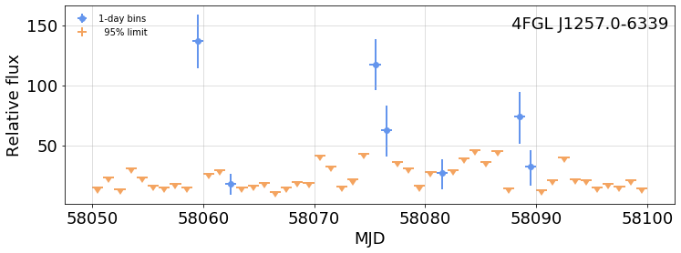

---

title: 4FGL J1257.0-6339 (P88Y3250)

keywords: fastai
sidebar: home_sidebar


nb_path: "nbs/P88Y3250.ipynb"
---
<!--

#################################################
### THIS FILE WAS AUTOGENERATED! DO NOT EDIT! ###
#################################################
# file to edit: nbs/P88Y3250.ipynb
# command to build the docs after a change: nbdev_build_docs

-->

<div class="container" id="notebook-container">
        
    {% raw %}
    
<div class="cell border-box-sizing code_cell rendered">

</div>
    {% endraw %}

    {% raw %}
    
<div class="cell border-box-sizing code_cell rendered">

<div class="output_wrapper">
<div class="output">

<div class="output_area">

<div class="output_subarea output_stream output_stdout output_text">
<pre>Wed Apr 28 06:55:43 PDT 2021
</pre>
</div>
</div>

</div>
</div>

</div>
    {% endraw %}

    {% raw %}
    
<div class="cell border-box-sizing code_cell rendered">
<details class="description">
      <summary data-open="Hide Code" data-close="Show Code"></summary>
        <summary></summary>
        <div class="input">

<div class="inner_cell">
    <div class="input_area">
<div class=" highlight hl-ipython3"><pre><span></span><span class="kn">from</span> <span class="nn">time</span> <span class="kn">import</span> <span class="n">perf_counter</span>
<span class="kn">from</span> <span class="nn">wtlike.config</span> <span class="kn">import</span> <span class="n">Config</span><span class="p">,</span> <span class="n">PointSource</span>
<span class="kn">from</span> <span class="nn">wtlike.lightcurve</span> <span class="kn">import</span> <span class="n">fit_table</span>
<span class="kn">from</span> <span class="nn">wtlike.bayesian</span> <span class="kn">import</span> <span class="n">BayesianBlockAnalysis</span>
<span class="kn">from</span> <span class="nn">utilities.ipynb_docgen</span> <span class="kn">import</span> <span class="o">*</span>

<span class="n">config</span> <span class="o">=</span> <span class="n">Config</span><span class="p">(</span><span class="n">data_folder</span><span class="o">=</span><span class="s1">&#39;/home/burnett/weekly&#39;</span><span class="p">,</span> <span class="n">verbose</span><span class="o">=</span><span class="mi">1</span><span class="p">)</span>
<span class="n">source</span> <span class="o">=</span> <span class="n">PointSource</span><span class="p">(</span><span class="s1">&#39;P88Y3250&#39;</span><span class="p">,</span> <span class="p">(</span><span class="mf">303.549</span><span class="p">,</span><span class="o">-</span><span class="mf">0.756</span><span class="p">))</span>
<span class="n">bba</span> <span class="o">=</span> <span class="kc">None</span>

<span class="k">def</span> <span class="nf">P88Y3250</span><span class="p">(</span><span class="n">clear</span><span class="o">=</span><span class="kc">False</span><span class="p">):</span>
    <span class="sa">r</span><span class="sd">&quot;&quot;&quot;</span>
<span class="sd">    ## Variability analysis of 4FGL J1257.0-6339</span>
<span class="sd">    </span>
<span class="sd">    This source, ~$0.5^\circ$ distant from B1259-63, has a nickname P88Y3250. </span>
<span class="sd">    I look at it because it may be variable, and affect B1259.. </span>
<span class="sd">    </span>
<span class="sd">    It is unassociated, with a pointlike TS=287, and flux uncertainty of 0.7%. Its 12-year SED is:</span>
<span class="sd">    </span>
<span class="sd">    {sed}</span>
<span class="sd">    </span>
<span class="sd">    {out1}</span>
<span class="sd">    </span>
<span class="sd">    {out2}</span>
<span class="sd">    </span>
<span class="sd">    Here is the light curve, measured in daily intervals.</span>
<span class="sd">    {fig1}</span>
<span class="sd">    </span>
<span class="sd">    Note that all the days are limits, except for a few quite significant ones.</span>
<span class="sd">    The blue line is the result of the Bayesian block (BB) analysis, which found only one block. </span>
<span class="sd">    (The fact that it did not assign the single-day spikes to blocks is not yet understood. </span>
<span class="sd">    No one has tried BB with likelihoods, most of which are just limits, this way.  Jeff Scargle is </span>
<span class="sd">    very interested.)</span>
<span class="sd">    </span>
<span class="sd">    Here is a an expansion about the 2017 B1259-63 periastron:</span>
<span class="sd">    </span>
<span class="sd">    {fig2}</span>
<span class="sd">    </span>

<span class="sd">    Finally, a plot showing the full likelihood, combining all {days} days, is</span>
<span class="sd">    </span>
<span class="sd">    {fig3}</span>
<span class="sd">    For this fit the TS is {fit_ts:.0f}. </span>
<span class="sd">    It should be compared with the TS from the pointlike fit shown above, indicating a need to </span>
<span class="sd">    examine the procedure. I&#39;m looking at a way to assess, and perhaps improve the assignment of </span>
<span class="sd">    weights.</span>
<span class="sd">    &quot;&quot;&quot;</span>
    <span class="k">global</span> <span class="n">bba</span>
    
    <span class="n">sed</span> <span class="o">=</span> <span class="n">image</span><span class="p">(</span><span class="s1">&#39;P88Y3250_sed_uw1216.jpg&#39;</span><span class="p">,</span> <span class="n">width</span><span class="o">=</span><span class="mi">250</span><span class="p">,</span> <span class="n">caption</span><span class="o">=</span><span class="kc">None</span><span class="p">)</span>
    
    <span class="k">with</span> <span class="n">capture_print</span><span class="p">(</span><span class="s1">&#39;Output: load data, add weights, form time bins, fit&#39;</span><span class="p">)</span> <span class="k">as</span> <span class="n">out1</span><span class="p">:</span>
        <span class="n">t0</span><span class="o">=</span> <span class="n">perf_counter</span><span class="p">()</span>
        <span class="k">if</span> <span class="n">bba</span> <span class="ow">is</span> <span class="kc">None</span> <span class="ow">or</span> <span class="n">clear</span><span class="p">:</span>
            <span class="n">bba</span> <span class="o">=</span> <span class="n">BayesianBlockAnalysis</span><span class="p">(</span><span class="n">config</span><span class="p">,</span> <span class="n">source</span><span class="p">,</span> <span class="n">clear</span><span class="o">=</span><span class="n">clear</span><span class="p">)</span>
        <span class="n">t1</span> <span class="o">=</span> <span class="n">perf_counter</span><span class="p">()</span> 
        <span class="nb">print</span><span class="p">(</span><span class="sa">f</span><span class="s2">&quot;Time elapsed: </span><span class="si">{</span><span class="p">(</span><span class="n">t1</span><span class="o">-</span><span class="n">t0</span><span class="p">)</span><span class="o">/</span><span class="mi">60</span><span class="si">:</span><span class="s2">.1f</span><span class="si">}</span><span class="s2"> min &quot;</span><span class="p">)</span> 
        
    <span class="k">with</span> <span class="n">capture_print</span><span class="p">(</span><span class="s1">&#39;BB partition output&#39;</span><span class="p">)</span> <span class="k">as</span> <span class="n">out2</span><span class="p">:</span>
        <span class="n">bba</span><span class="o">.</span><span class="n">partition</span><span class="p">(</span><span class="n">clear</span><span class="o">=</span><span class="n">clear</span><span class="p">)</span>
        <span class="n">t2</span> <span class="o">=</span> <span class="n">perf_counter</span><span class="p">()</span>
        <span class="nb">print</span><span class="p">(</span><span class="sa">f</span><span class="s2">&quot;Time elapsed: </span><span class="si">{</span><span class="p">(</span><span class="n">t2</span><span class="o">-</span><span class="n">t1</span><span class="p">)</span><span class="o">/</span><span class="mi">60</span><span class="si">:</span><span class="s2">.1f</span><span class="si">}</span><span class="s2"> min &quot;</span><span class="p">)</span> 
        
    <span class="n">fig1</span> <span class="o">=</span><span class="n">figure</span><span class="p">(</span>
            <span class="n">bba</span><span class="o">.</span><span class="n">plot</span><span class="p">(</span><span class="n">title</span><span class="o">=</span><span class="s1">&#39;Light curve for 4FGL J1257.0-6339&#39;</span><span class="p">,</span>
                   <span class="n">colors</span><span class="o">=</span><span class="p">(</span><span class="s1">&#39;red&#39;</span><span class="p">,</span> <span class="s1">&#39;lightgrey&#39;</span><span class="p">,</span> <span class="s1">&#39;blue&#39;</span><span class="p">),</span> <span class="n">yscale</span><span class="o">=</span><span class="s1">&#39;log&#39;</span><span class="p">,</span> <span class="n">ylim</span><span class="o">=</span><span class="p">(</span><span class="mf">0.5</span><span class="p">,</span> <span class="mi">200</span><span class="p">)),</span>
            <span class="n">width</span><span class="o">=</span><span class="mi">600</span><span class="p">)</span>
    
    <span class="n">fig2</span> <span class="o">=</span> <span class="n">figure</span><span class="p">(</span>
            <span class="n">bba</span><span class="o">.</span><span class="n">plot</span><span class="p">(</span><span class="n">title</span><span class="o">=</span><span class="s1">&#39;Light curve for 4FGL J1257.0-6339&#39;</span><span class="p">,</span><span class="n">colors</span><span class="o">=</span><span class="p">(</span><span class="s1">&#39;red&#39;</span><span class="p">,</span> <span class="s1">&#39;lightgrey&#39;</span><span class="p">,</span> <span class="s1">&#39;blue&#39;</span><span class="p">),</span>
             <span class="n">tzero</span><span class="o">=</span><span class="mf">58018.1</span><span class="p">,</span> <span class="n">xlim</span><span class="o">=</span><span class="p">(</span><span class="mi">20</span><span class="p">,</span><span class="mi">90</span><span class="p">),</span><span class="n">ylim</span><span class="o">=</span><span class="p">(</span><span class="mi">4</span><span class="p">,</span><span class="mi">200</span><span class="p">),</span> <span class="n">yscale</span><span class="o">=</span><span class="s1">&#39;log&#39;</span><span class="p">,</span> <span class="n">fignum</span><span class="o">=</span><span class="mi">2</span><span class="p">),</span>
            <span class="n">width</span><span class="o">=</span><span class="mi">600</span><span class="p">)</span>
    
    <span class="n">fig3</span> <span class="o">=</span> <span class="n">figure</span><span class="p">(</span>
            <span class="n">bba</span><span class="o">.</span><span class="n">plot_concatenated</span><span class="p">(</span><span class="n">fignum</span><span class="o">=</span><span class="mi">3</span><span class="p">,</span> <span class="n">xlim</span><span class="o">=</span><span class="p">(</span><span class="mf">0.5</span><span class="p">,</span> <span class="mf">1.5</span><span class="p">)),</span> 
            <span class="n">width</span><span class="o">=</span><span class="mi">300</span><span class="p">)</span>

    <span class="n">days</span> <span class="o">=</span> <span class="nb">len</span><span class="p">(</span><span class="n">bba</span><span class="o">.</span><span class="n">lc_df</span><span class="p">)</span>
    
    <span class="n">fit_ts</span> <span class="o">=</span> <span class="n">bba</span><span class="o">.</span><span class="n">bb_fit</span><span class="o">.</span><span class="n">iloc</span><span class="p">[</span><span class="mi">0</span><span class="p">]</span><span class="o">.</span><span class="n">fit</span><span class="o">.</span><span class="n">ts</span>
    <span class="k">return</span> <span class="nb">locals</span><span class="p">()</span>
</pre></div>

    </div>
</div>
</div>

    </details>
</div>
    {% endraw %}

    {% raw %}
    
<div class="cell border-box-sizing code_cell rendered">
<div class="input">

<div class="inner_cell">
    <div class="input_area">
<div class=" highlight hl-ipython3"><pre><span></span><span class="n">nbdoc</span><span class="p">(</span><span class="n">P88Y3250</span><span class="p">,</span> <span class="n">clear</span><span class="o">=</span><span class="kc">False</span><span class="p">)</span>
</pre></div>

    </div>
</div>
</div>

<div class="output_wrapper">
<div class="output">

<div class="output_area">


<div class="output_markdown rendered_html output_subarea ">
<h2 id="Variability-analysis-of-4FGL-J1257.0-6339">Variability analysis of 4FGL J1257.0-6339<a class="anchor-link" href="#Variability-analysis-of-4FGL-J1257.0-6339"> </a></h2><p>This source, ~$0.5^\circ$ distant from B1259-63, has a nickname P88Y3250. 
I look at it because it may be variable, and affect B1259..</p>
<p>It is unassociated, with a pointlike TS=287, and flux uncertainty of 0.7%. Its 12-year SED is:</p>
<div class="nbdoc_image">
<figure style="margin-left: 5%" title="Figure 1">  <a href="images/P88Y3250_fig_01.png" title="images/P88Y3250_fig_01.png">       </a> </figure>
</div><p><details  class="nbdoc-description" >  <summary> Output: load data, add weights, form time bins, fit </summary>  <div style="margin-left: 5%"><pre>photons and exposure for P88Y3250: Restoring from cache with key "P88Y3250_weekly_data"<br>BayesianBlockAnalysis: Source P88Y3250 with:<br>   data:     3,972,518 photons from   2008-08-04 to 2021-04-22<br>     exposure: 3,339,961 intervals from 2008-08-04 to 2021-04-22<br>Time bins: 4643 intervals of 1 days, from MJD 54683.0(2008-08-05) to 59326.0(2021-04-22))<br>Loaded 4471 / 4471 cells with exposure &gt; 0.3 for light curve analysis<br>Time elapsed: 0.2 min <br></pre></div> </details></p>
<p><details  class="nbdoc-description" >  <summary> BB partition output </summary>  <div style="margin-left: 5%"><pre>P88Y3250_weekly_bb_edges: Restoring from cache<br>Partitioned 4471 cells into 1 blocks, using LikelihoodFitness <br>Loaded 1 / 1 cells with exposure &gt; 0.3 for fitting<br>Time elapsed: 0.0 min <br></pre></div> </details></p>
<p>Here is the light curve, measured in daily intervals.</p>
<div class="nbdoc_image">
<figure style="margin-left: 5%" title="Figure 2">  <a href="images/P88Y3250_fig_02.png" title="images/P88Y3250_fig_02.png">       </a> </figure>
</div><p>Note that all the days are limits, except for a few quite significant ones.
The blue line is the result of the Bayesian block (BB) analysis, which found only one block. 
(The fact that it did not assign the single-day spikes to blocks is not yet understood. 
No one has tried BB with likelihoods, most of which are just limits, this way.  Jeff Scargle is 
very interested.)</p>
<p>Here is a an expansion about the 2017 B1259-63 periastron:</p>
<div class="nbdoc_image">
<figure style="margin-left: 5%" title="Figure 3">  <a href="images/P88Y3250_fig_03.png" title="images/P88Y3250_fig_03.png">       </a> </figure>
</div><p>Finally, a plot showing the full likelihood, combining all 4471 days, is</p>
<div class="nbdoc_image">
<figure style="margin-left: 5%" title="Figure 4">  <a href="images/P88Y3250_fig_04.png" title="images/P88Y3250_fig_04.png">       </a> </figure>
</div><p>For this fit the TS is 116. 
It should be compared with the TS from the pointlike fit shown above, indicating a need to 
improve the procedure.</p>

</div>

</div>

</div>
</div>

</div>
    {% endraw %}

</div>
 

